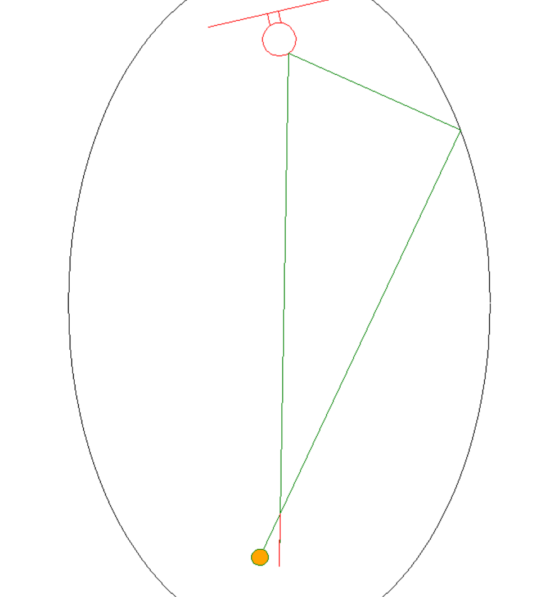

Logan's Projects
Variable-Resistance Strength Training
- SolidWorks design mapping resistance to the body’s strength curve with a variable-radius helical drum and a two-stage 25:1 gear train.
- Python spline-fit converting force-angle data into drum profiles while keeping net mechanical advantage 1:1 so labeled load matches what users feel.
- Mathematical modelling in Excel to generate swappable, custom-printed drum geometries for different muscle groups.
- Machining the next iteration to handle heavier loads, tighten tolerances, cut backlash, and deliver smoother, quieter operation

UBC Rover - Arm Subteam
- Designing for lightweight, precise and durable joint modules and links while maintaining manufacturability and serviceability.
- Validating core functions (grasping, reach, payload) to hit performance targets for URC and CIRC through clear test plans and field trials.
- Collaborating with software and electrical teams to debug issues and ensure the control systems operate within the arm’s mechanical limits and sensor setup.
Autonomous Claw Competition
- Unique software design: implemented a moving-average filter in C to stabilize sonar readings and prevent false triggers, giving us a clear edge at the competition.
- Built an Excel-based model to find claw geometry that balanced servo torque output with jaw size under tight constraints (sheet metal, elastic bands, Arduino, nylon tubing).
- Worked with a team to produce drawings, deliver a technical presentation, and ultimately places 2nd in the class on competition day.

Seating50 - Harvard CS50 Final
- Full stack web app with a Python Flask backend and JavaScript UI, completed as the final project for Harvard CS50. Produces optimized classroom seating plans from teacher inputs.
- Guided Randomness algorithm converts student compatibility preferences into mathematical sorting constraints and encodes the classroom as an unsorted 2D matrix.
- Detects impossible or over-constraining requests, makes adjustments when needed, and delivers clear feedback to the user.

Elliptical Shooting Lane Simulator
- Simulated the ellipse focus-reflection property with Python Turtle in a basketball context.
- Built a UI with backboard and launch-angle controls, along with specular reflections and rim/backboard collision checks.
- Outcome: demonstrated a practical concept for a compact shooting lane where shots self-return to the shooter, reducing retrieval time and enabling rapid-fire reps.


Scrabble Solver
- Python-based Scrabble solver that enumerates every legal move from the current board and rack, ranks them by score, and presents the results to the user.
- Works by trying each word at every start cell through a fixed series of validating tests, then tallies points under official scoring.
- Algorithm runtime is effectively constant; I plan to further improve it by adding early pruning constraints to reduce the candidate word set.